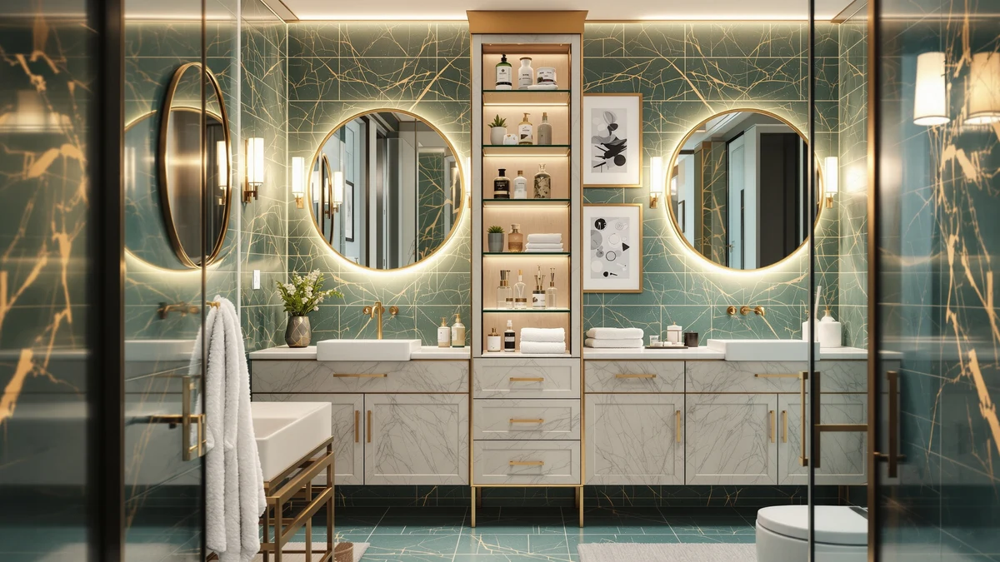

Quick Answer
The BOTLOG 67'' tall bathroom storage cabinet packs enclosed and open shelving into a narrow footprint, and verified owners praise how much it fits for $159.99. If you need more storage without crowding a small bathroom, this is the cabinet we'd point you toward first.
Our pick: BOTLOG 67'' Tall Bathroom Storage, $159.99 Check Price on Amazon
Bottom line: our top pick is the BOTLOG 67'' Tall Bathroom Storage Cabinet at $159.99.
Things to Know Before You Buy
- The BOTLOG 67'' cabinet stands tall rather than wide, so it suits narrow gaps next to a toilet or vanity better than bulky freestanding units.
- At $159.99, it costs more than compact alternatives like the Yaheetech cabinet, but gives you roughly double the shelf space.
- Owners report the metal and wood build holds up well in humid bathrooms, though a few note the door hinges feel light-duty.
- If $159.99 is more than you want to spend, the HMstone over-the-toilet unit and Yaheetech cabinet below cover similar ground for less.
This botlog 67'' tall bathroom review looks at a storage cabinet built for bathrooms that have more height than floor space to spare. Small bathrooms rarely have room for a dresser-sized cabinet, and a lot of tall storage units sacrifice stability or shelf depth to fit a narrow footprint. We compared the BOTLOG's listed dimensions, materials and price against three other bathroom storage pieces, then checked what verified Amazon buyers say after living with each one.
Our pick for most small bathrooms is the BOTLOG 67'' tall cabinet. It costs more than the Yaheetech or HMstone options below, but it earns that price with roughly double the shelf space and a metal frame that owners say feels sturdier than typical particleboard cabinets at this price point.
We paid close attention to how reviewers describe living with the cabinet day to day, beyond their first reaction to unboxing it. A storage piece that looks good in photos but wobbles after three months of regular use fails the small-bathroom problem it's marketed for, so we weighted long-term feedback more heavily than five-star reviews posted the week of delivery.
Why You Should Trust Us
We're the editorial team at Best Bathroom Storage, and we focus on researching bathroom organization products rather than selling them. For this botlog 67'' tall bathroom review, we compared the manufacturer's listed dimensions and materials against the BOTLOG's price and cross-checked that against verified Amazon buyer feedback and three competing storage pieces in the same category. We don't own a testing lab or a warehouse of review units, so every claim here comes from published specs, pricing history and what verified owners report after living with the product. We earn a commission when you buy through our links, but that commission doesn't influence which cabinet we recommend first or how we describe its flaws.
Our Research Process
To evaluate the BOTLOG 67'' tall bathroom storage cabinet, we started with the manufacturer's stated dimensions, weight capacity and material list, then compared those numbers against similarly priced tall cabinets on the market. From there, we read through verified Amazon reviews for patterns: what owners repeatedly praise, what they repeatedly complain about, and whether the complaints cluster around a specific part of the cabinet like hinges or shelf spacing. We weighted recent reviews more heavily than older ones, since manufacturers sometimes change suppliers or materials without updating the listing. The price comparisons below reflect the listed price at the time of publishing, which can shift without notice.
We also cross-referenced the BOTLOG against three other bathroom storage products in a similar price band and category, matching listed dimensions and materials where the manufacturer provided them. Where a listing didn't specify a material or weight capacity, we noted that gap rather than guessing at a number, since filling in missing specs with assumptions is exactly the kind of inflated claim we're trying to avoid.
Overview & Specs

BOTLOG 67'' Tall Bathroom Storage
What we like
- Metal and wood frame that owners say feels sturdy once assembled
- 67 inches of vertical storage without widening the footprint
- Mix of open shelving and enclosed cabinet space in one unit
Flaws but not dealbreakers
- Some owners note the door hinges feel lighter duty than the rest of the frame
- At $159.99, it costs more than compact alternatives with less capacity
| Material | Metal / wood |
| Size | Large |
The BOTLOG 67'' tall bathroom storage cabinet is built around a simple idea: if you can't add floor space, add height. The metal and wood frame rises nearly five and a half feet, which puts most of its storage above the reach of a typical vanity or toilet, so it slots into a corner or empty wall strip that a wider cabinet couldn't use.
At $159.99, it sits in the middle of the tall-cabinet category, pricier than compact units like the Yaheetech cabinet but still well under custom built-ins. Owners report the enclosed lower cabinet works well for towels and cleaning supplies, while the open upper shelves suit everyday items you want within reach. The main complaint that comes up across verified reviews is the hinge hardware, which a handful of buyers describe as flimsy compared to the rest of the frame.
What We Liked
The clearest strength of the BOTLOG 67'' tall bathroom storage cabinet is how much capacity it adds without eating into floor space. A lot of tall cabinets we researched in this price range top out around 60 inches, so the extra height here turns into real usable shelving instead of a taller box that's still cramped inside. Owners also consistently mention that the combination of closed cabinet storage and open shelving makes it easy to hide clutter on the bottom while keeping daily items accessible up top. The metal frame underneath the wood paneling comes up often in verified reviews as the reason the unit feels sturdier than typical particleboard cabinets at a similar price.
The price also holds up reasonably well against the alternatives once you account for capacity. Per cubic foot of storage, the BOTLOG compares favorably to the Yaheetech cabinet even though its sticker price is higher, since the Yaheetech's smaller size means you would likely need a second storage piece to match what the BOTLOG covers on its own.
What Could Be Better
The recurring complaint across verified owner reviews is the door hardware. Several buyers describe the hinges as thinner and less durable than the metal frame they're attached to, which matters if the cabinet sees daily use. A smaller number of reviewers mention that assembly takes longer than the listing suggests, partly because of the unit's height. None of these issues come up often enough to call the cabinet unreliable, but if you're rough on cabinet doors, it's worth keeping an eye on how the hinges hold up after the first few months.
A handful of reviewers also mention that the cabinet's height makes it awkward to maneuver through a narrow bathroom door frame during delivery, which is worth measuring for before you order rather than after it arrives.
Who Is It For?
This cabinet makes the most sense for a small bathroom where the walls have more usable height than the floor has usable width. It's a good match if you're trying to consolidate towels, toiletries and cleaning supplies into one spot without crowding the sink or toilet area. If your bathroom already has a linen closet or built-in storage nearby, the extra capacity is less likely to pay for itself at $159.99, and a cheaper, shorter cabinet like the Yaheetech option below may cover what you actually need.
It's also a reasonable fit for a shared bathroom where multiple people need dedicated shelf space, since the combination of open and closed storage lets you split visible everyday items from things you would rather keep out of sight.
Alternatives to Consider
The BOTLOG 67'' tall bathroom storage cabinet isn't the only way to add space to a small bathroom, and it won't fit every layout or budget. Below are three alternatives worth comparing before you commit $159.99 to a single tall cabinet.
The HMstone Over The Toilet Storage unit solves a different problem than the BOTLOG. Instead of claiming floor space, it mounts above the toilet tank, which makes it the better option if your bathroom has no floor room left to spare. At $129.99, it costs about $30 less than the BOTLOG, and verified buyers mention it holds up well for towels and toiletries, though the mounting hardware takes more effort to get level than a freestanding cabinet does.
The Yaheetech Small Bathroom Storage Cabinet is the budget option here. At $92.99, it's roughly $67 cheaper than the BOTLOG, and it still gives you enclosed cabinet storage rather than open shelving alone. The trade-off is capacity: its smaller frame simply can't hold as much, so it suits a bathroom where you need to tidy up a few items rather than consolidate a full linen closet's worth of supplies.
The Toilet Paper Holder Stand Freestanding from Bunoxea isn't a real substitute for either cabinet, but at $33.99 it's worth mentioning as a low-cost add-on. It won't replace shelving for towels or toiletries, though it's a reasonable way to add a small shelf and spare toilet paper storage next to a toilet in a bathroom too tight for anything larger.

Editor's Pick
HMstone Over The Toilet Storage
A space-saving option that sits above the toilet instead of taking up floor room, making it one of the few picks here that works even in bathrooms too tight for the BOTLOG's footprint.
$129.99
Check Price on Amazon
Best Value
Yaheetech Small Bathroom Storage Cabinet
At $92.99, this compact cabinet costs about $67 less than the BOTLOG while still giving you enclosed storage, though you'll get noticeably less shelf space in return.
$92.99
Check Price on Amazon
Premium Choice
Toilet Paper Holder Stand Freestanding
This freestanding stand won't replace a full cabinet, but it's a cheap way to add a shelf and extra toilet paper storage next to a toilet that has no room for anything taller.
$33.99
Check Price on AmazonFrequently Asked Questions
Is the BOTLOG 67'' tall bathroom storage cabinet worth the price?
At $159.99, the BOTLOG costs more than compact alternatives, but it gives you more enclosed and open shelving per square foot of floor space than cheaper options like the Yaheetech cabinet. For a narrow bathroom that needs real storage capacity, reviewers consistently call that trade-off worthwhile.
What is the BOTLOG 67'' tall bathroom storage cabinet made of?
According to the listing, the cabinet combines a metal frame with wood paneling. Owners report the combination holds up to normal bathroom humidity without warping, though a few mention the door hinges feel lighter duty than the rest of the build.
What's a good alternative to the BOTLOG 67'' tall bathroom storage cabinet?
If floor space is the real constraint, the HMstone over-the-toilet unit uses wall space the BOTLOG can't reach. If budget matters more than capacity, the Yaheetech cabinet costs about $67 less for a smaller footprint.
Final Verdict
The short version of this botlog 67'' tall bathroom review is that BOTLOG built a useful cabinet for bathrooms that are short on floor space but tall on wall space. The price sits above the cheapest options in this category, but verified owners back up the extra capacity you get for it, and the metal frame construction holds up to the kind of daily use a bathroom cabinet gets. If your bathroom fits a 67-inch-tall footprint, BOTLOG's cabinet is the pick we'd start with.